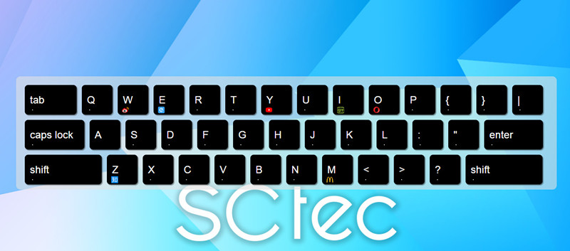
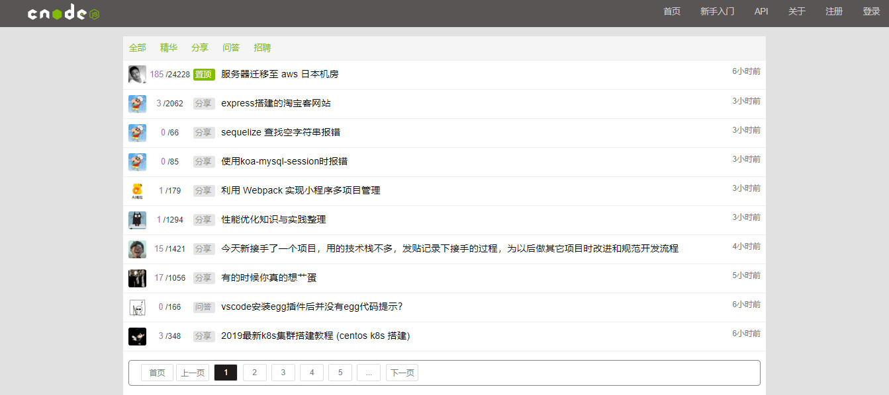

自我评价
- 1、熟悉HTML5/CSS3的新功能，熟悉es6语法，能够高度还原UI设计稿与交互实现，能够快速搭建移动端页面及动画的制作；
- 2、熟悉媒体查询，可以实现响应式，会使用rem、vw/vh等技术制作适配不同设备的页面
- 3、熟练运用LESS/SASS开发兼容各大主流浏览器的Web页面；
- 4、熟悉javascript，熟悉DOM编程，熟悉jQuery、Zepto、iScroll、swiper等框架，(了解bootstrap);
- 5、熟悉Ajax/Json、了解php、node.js，能够配合后台实现应用模块的开发；
- 6、熟悉模块化编程，了解AMD和CMD规范，使用过requirejs和seajs，理解MVC、MVVM等思想；
- 7、熟悉vue，对生命周期，计算属性，vue指令，组件通信有深入了解
项目展示
- 键盘导航：一个键盘形式的导航，不同的键对应不同的页面地址。不同的键对应不同的页面地址。 使用js动态生成键盘、封装工具函数，使用css3进行制作，
- 预览链接:https://yjj963.github.io/nav/
- 源码链接:https://github.com/yjj963/nav
- 
- 画板： 可保存为图片，可切换画笔颜色，选择画笔粗细，还具有橡皮擦、清除画布功能
- 预览链接：https://yjj963.github.io/canvas/
- 源码链接：https://github.com/yjj963/canvas

- 轮播： 一个苹果风格的轮播（有缝）
- 预览链接：https://yjj963.github.io/slider/apple-slider.html
- 源码链接：https://github.com/yjj963/slider

- 仿cnode社区： 使用到vue.js计算属性、 vue.js的内置指令和事件的绑定、 vue.js的自定义事件和触发、 vue-router路由的跳转和监听、 父子组件之间的数据传递
- 预览链接：https://yjj963.github.io/cnode-vue/index.html
- 源码链接：https://github.com/yjj963/cnode-vue
- 
工作经历
2017.10-2018.03
-
北京联泰集群
前端开发工程师
- 集群操作系统 b/s 用于实现高性能计算(HPC)，
- 一个类似桌面的界面，模块中列表居多
- 使用css的float等实现多个模块的排版布局，
- 使用JavaScript，jquery实现页面交互效果，如分页、进度条、弹出框、拖拽。
- 使用ajax技术和后台工程师提供的数据接口完成有效对接。
- bug修复
教育经历
2013/09 - 2017/07
山西机电工程大学
计算机科学与技术 统招 本科